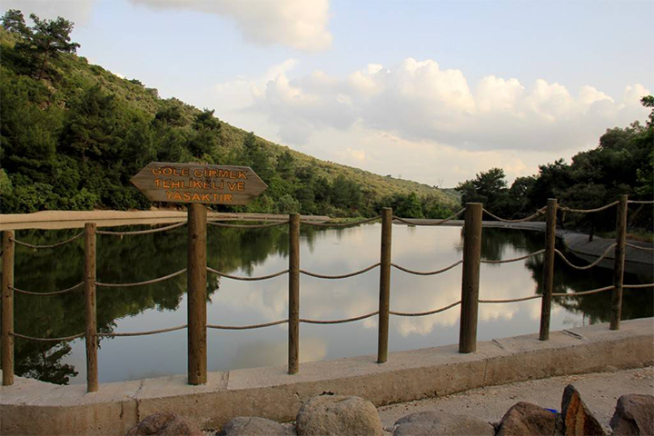
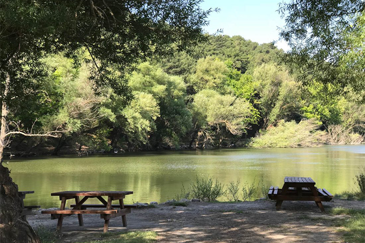
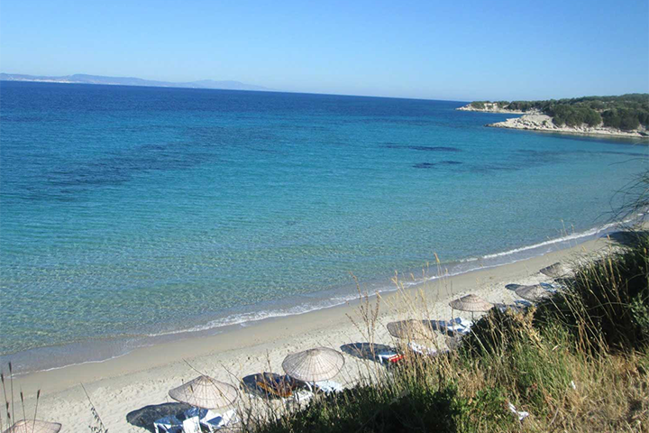

Izmir'in Doğal Güzellikleri
-
Homeros Vadisi - İzmir’in en büyük ilçelerinden olan Bornova’da genç nüfus çok yoğundur, birçok eğlence mekanı bulunur. Bilinmeyen ise Bornova merkezden yaklaşık 10 dakika uzaklıkta yemyeşil bir doğa harikasının bulunduğudur. Homeros Vadisi’nde 18 gölet bulunur ve 7 km boyunca yeşilin her tonu cömertçe ziyaretçilere sunulur.

-
Karagol Tabiat Parkı - İzmir’de gezilmesi gereken yerler listesi yapacak olanların Karagöl Tabiat Parkı’nı rotalarına eklemeleri gerekir. Resmi tatillerde ve hafta sonlarında şehrin nefes alınacak yerlerinden olan Karagöl Tabiat Parkı kamp severlerin de gözdeleri arasındadır. Devasa bir alanda konumlandırılan bu parka ismini veren Karagöl’ün mistik bir havası bulunur.

-
Pissa Koyu - İzmir’in göreceli olarak henüz tam anlamıyla keşfedilmemiş sahil beldelerinden olan Dikili, birbirinden güzel plajlara ev sahipliği yapıyor. Berrak suları ile her göreni kendine hayran bırakan Pissa Koyu, İzmir’in güzel yerleri arasında yer alıyor. Kamp severlerin de gözdesi niteliği taşıyan koya hızlıca erişmek için kiralık araba seçeneklerinin değerlendirilmesi öneriliyor. Böylece konforlu yolculuklar yapılabilirken İzmir’in diğer güzelliklerini keşfetmek kolaylaşıyor
